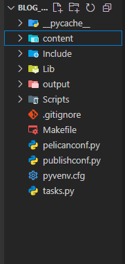

Este blog, no qual você navega, é hoje meu maior orgulho como desenvolvedor. Ele foi criado — entre outras razões — para compartilhar, com vocês e com a posteridade, o conhecimento que acumulei em programação e tecnologia. Por isso, decidi escrever este post, mostrando como o construí. Espero, sinceramente, que este conteúdo lhes seja útil.
Primeiros passos
Todo esse blog foi construído graças ao Pelican que é um gerador de sites estáticos escrito em Python. Você pode conferir a documentação oficial através do link: https://getpelican.com/
No VsCode, após ter criado o diretório do seu projeto,
- Crie um ambiente virtual e instale o Pelican:
python -m venv .
source meu-blog/bin/activate # No Windows: .\Scripts\activate
pip install pelican markdown
- Feita a instalação, crie um novo projeto Pelican com o comando:
pelican-quickstart
Responda, por fim, as perguntas conforme forem aparecendo com Y/N.
Feito isso a estrutura do nosso projeto será formada:

Importante notar que, o arquivo pelicanconf.py é onde teremos as configurações referentes ao desenvolvimento, enquanto no publishconf.py teremos as nossas configurações de produção. Sendo assim, a variável: SITEURL, estará vazia no pelicanconf.py e deve ter o seu domínio pessoal em publishconf.py
Configurado o arquivo pelicanconf.py, vamos ao nosso hello world
- Acesse a pasta
contente crie um arquivo.mdpara que seja sua página inicial. Ex:home.md- Como a intenção é a criação de um blog, crie uma pasta chamada
pagese outra chamadaposts - Inclua a
home.mdnapages
- Como a intenção é a criação de um blog, crie uma pasta chamada
- No conteúdo de seu arquivo.md, você terá que incluir, antes de qualquer texto, imagem, ou mídia, uma seção de metadados com delimitadores
---
---
Title: Página Inicial
Save_as: index.html
---
[Seu conteúdo aqui]
- Para gerar os arquivos estáticos do seu site, execute o seguinte comando no terminal, na raiz do seu projeto:
pelican content
Este comando processará os arquivos no diretório content/ e gerará o site estático no diretório output/.

- Por fim, e aqui chegamos ao final da etapa 1 da criação do nosso blog, inicie o servidor de desenvolvimento com o seguinte comando:
pelican -r -l
Este comando gera o conteúdo e inicia um servidor local que permite visualizar o site através do endereço: http://localhost:8000
Vamos criar agora o nosso próprio tema
Quando executamos o comando: pelican content ou o pelican content -s pelicanconf.py, o Pelican gera na pasta output as pastas e arquivos referentes aos temas de sua página, porém, será um tema padrão, que no caso não nos interessa.
Para trabalharmos com o nosso próprio tema, primeiro, temos que definir a seguinte estrutura de arquivos e pastas:


Feita essa estrutura, temos que passar o path da pasta do nosso tema na variável THEME do arquivo pelicanconf.py:
THEME = "./tema/"
- Acesse agora o arquivo base.html. O arquivo que será renderizado no navegador será o index.html. O base.html, nos servirá aqui para fins de encapsulamento. Ele terá o seguinte código:
<!DOCTYPE html>
<html lang="en">
<head>
<meta charset="UTF-8">
<meta name="viewport" content="width=device-width, initial-scale=1.0">
<title>Document</title>
</head>
<body>
{% block content %}
{% endblock %}
</body>
</html>
- Agora no index.html, podemos herdar o que há no arquivo base.html, através da linha
{% ’extends './base.html’ %}- Podemos chamar as variáveis contidas no arquivo pelicanconf.py, utilizando
{{ }}- Leia sobre Jinja2 para entender mais do porque disso.
- Podemos chamar as variáveis contidas no arquivo pelicanconf.py, utilizando
{% extends './base.html'%}
<h2>{{ SITENAME }}</h2>
<p>Bem vindo ao meu blog</p>

Estilização do Blog
A seguir exibo o conteúdo dos arquivos utilizados na construção do meu tema.
Base.html
tema\templates\base.html
<!DOCTYPE html>
<html lang="pt-br">
<head>
<meta charset="UTF-8">
<meta name="viewport" content="width=device-width, initial-scale=1.0">
<!-- #region Font Awesome e Bootstrap Libs -->
<link rel="stylesheet" href="https://cdn.jsdelivr.net/npm/bootstrap@5.3.3/dist/css/bootstrap.min.css"
integrity="sha384-QWTKZyjpPEjISv5WaRU9OFeRpok6YctnYmDr5pNlyT2bRjXh0JMhjY6hW+ALEwIH"
crossorigin="anonymous">
<link rel="stylesheet" href="https://cdnjs.cloudflare.com/ajax/libs/font-awesome/6.7.2/css/all.min.css"
integrity="sha512-Evv84Mr4kqVGRNSgIGL/F/aIDqQb7xQ2vcrdIwxfjThSH8CSR7PBEakCr51Ck+w+/U6swU2Im1vVX0SVk9ABhg=="
crossorigin="anonymous"
referrerpolicy="no-referrer" />
<link rel="stylesheet" href="https://cdnjs.cloudflare.com/ajax/libs/font-awesome/6.7.2/css/brands.min.css"
integrity="sha512-58P9Hy7II0YeXLv+iFiLCv1rtLW47xmiRpC1oFafeKNShp8V5bKV/ciVtYqbk2YfxXQMt58DjNfkXFOn62xE+g=="
crossorigin="anonymous"
referrerpolicy="no-referrer" />
<!--#endregion-->
<link rel="stylesheet" href="{{ SITEURL }}/theme/css/style.css">
<title>{{ SITENAME }}</title>
</head>
<body class="d-flex flex-column min-vh-100">
<!-- #region Header -->
{% block header %}
<header class="bg-dark text-white text-center py-4">
<div class="container">
<div class="logo">
<img src=
"{{ SITEURL }}/theme/images/logo2.png"
alt="logo" class="mb-3 logo-img"
style="max-width:150px;">
<span class="devonfire-text">
DevOnFire
</span>
</div>
<h1>Artigos, códigos e devaneios</h1>
<p class="lead">Espero que curtam. Tudo aqui deu trabalho pra fazer 🤙</p>
</div>
</header>
{% endblock %}
<!-- #endregion -->
<!-- #region Espaço reservado para o botão e a funcionalidade de arquivo do Blog -->
<!-- #endregion-->
<!-- #region conteúdo Principal -->
<main class="flex-glow-1">
{% block content %}
{% endblock %}
</main>
<!-- #endregion -->
<!-- #region footer -->
<footer class="footer mt-auto py-4" style="background-color: #000; color: #fff;">
<div class="container">
<div class="row align-items-center">
<div class="col-md-4 text-center text-md-start">
<a href="{{ SITEURL }}/">
<img src="{{ SITEURL }}/theme/images/logo2.png"
alt="Logo"
class="logo-img"
style="max-width: 100px;"
title="Voltar para a página inicial">
</a>
</div>
<div class="col-md-4 text-center">
<p class="mb-0"
style="color: #EE471D;">
© {{ SITEYEAR }}
DevOnFire. Todos os direitos reservados a
<a href="https://github.com/robsings"
target="_blank"
style="color:#fcfcfc;text-decoration:none;font-weight:900">
robsings
</a>.
</p>
</div>
<div class="col-md-4 text-center text-md-end">
<a href="https://github.com/robsings"
target="_blank"
class="text-white me-3"
title="Github - robsings">
<i class="fa-brands fa-square-github"></i>
</a>
<!-- TODO: Inclua novas redes sociais aqui -->
</div>
</div>
</div>
</footer>
<!-- #endregion -->
<!-- #region Bootstrap Lib -->
<script src="https://cdn.jsdelivr.net/npm/bootstrap@5.3.3/dist/js/bootstrap.min.js">
</script>
<!-- #endregion -->
<script>
(function() {
let siteName = '{{ SITENAME }}'; // sem escapejs
let message = "🔥 " + siteName;
let speed = 290;
function scrollTitle() {
document.title = message;
message = message.substring(1) + message.charAt(0);
setTimeout(scrollTitle, speed);
}
scrollTitle();
})();
</script>
</script>
</body>
</html>
Index.html
tema\templates\index.html
{% extends './base.html' %}
{% block content %}
<div class="container my-5">
<div class="row">
{% for article in articles %}
<div class="col-12 col-md-6 col-lg-4 mb-4"><!--col-md-4 mb-4-->
<a href="{{ SITEURL }}/{{ article.url }}" class="card-link" style="text-decoration: none; color: inherit;">
<div class="card h-100 shadow-sm">
{% if article.metadata.image %}
<img
src="{{ SITEURL }}/{{ article.metadata.image }}"
class="card-img-top"
alt="{{ article.title }}"
style="object-fit: center; width: 100%; height: 200px;">
{% endif %}
<div class="card-body d-flex flex-column">
<h5 class="card-title mb-2">{{ article.title }}</h5>
<p class="card-text flex-grow-1">
{{ article.summary|striptags|truncate(140) }}
</p>
<p class="card-text mt-3">
<small class="text-muted publication-date">
Publicado em: {{ article.date.strftime('%d/%m/%Y %H:%M') }}
</small>
</p>
</div>
</div>
</a>
</div>
{% else %}
<div class="col-12">
<p>Nenhum artigo encontrado.</p>
</div>
{% endfor %}
</div>
</div>
{% endblock %}
Article.html
tema\templates\article.html
{% extends 'base.html' %}
<!-- #region Header-->
{% block header %}
<header class="bg-dark text-white text-center py-4">
<div class="container text-center">
<a href="{{ SITEURL }}/"
class="logo-img">
<i class="fas fa-home fa-2x"
title="Voltar para a página inicial"
style="text-decoration: none; color: #EE471D;"></i>
</a>
</div>
</header>
{% endblock %}
{% block content %}
<div class="container my-5">
<h1 class="mb-3">
{{ article.title }}
</h1>
<p class="text-muted publication-date mb-5 text-end">
Publicado em {{ article.date.strftime('%d/%m/%Y %H:%M') }}
</p>
{% if article.metadata.image %}
<img src="{{ SITEURL }}/{{ article.metadata.image }}"
alt="{{ article.title }}"
class="img-fluid mb-5 feature-image">
{% endif %}
<div class="article-content mb-5">
{{ article.content }}
</div>
</div>
{% endblock %}
Style.css
tema\static\css\style.css
@import url('https://fonts.googleapis.com/css2?family=Audiowide&display=swap');
@import url('https://fonts.googleapis.com/css2?family=Audiowide&family=Poiret+One&display=swap');
@import url('https://fonts.googleapis.com/css2?family=Quicksand&display=swap');
:root{
--font-logo: 'Audiowide', cursive;
--font-title: 'Poiret One', cursive;
--font-body: 'Quicksand', sans-serif;
}
body{
font-family:var(--font-body)!important;
}
h1, h2, h3, h4, h5{
font-family:var(--font-title)!important;
font-weight: 900!important;
}
/* #region responsividade*/
@media (max-width: 767px) {
.card {
flex-direction: column;
display: flex;
align-items: center;
padding: 10px;
gap: 15px;
}
.card-img-top {
width: 100px;
height: auto;
object-fit: cover;
}
.card-body {
flex: 1;
}
.card-link {
width: 95%;
margin: 0 auto;
}
}
/* #endregion*/
/* #region animações*/
@keyframes glow {
0%, 100% {
filter: drop-shadow(0 0 5px rgba(255, 100, 0, 0.6))
drop-shadow(0 0 10px rgba(255, 60, 0, 0.4))
drop-shadow(0 0 20px rgba(255, 20, 0, 0.2));
}
50% {
filter: drop-shadow(0 0 10px rgba(255, 120, 0, 0.7))
drop-shadow(0 0 20px rgba(255, 80, 0, 0.5))
drop-shadow(0 0 30px rgba(255, 40, 0, 0.3));
}
}
/* #endregion*/
/* #region estilização do header e logo*/
.logo-img{
filter: drop-shadow(1px 1px 2px rgba(0, 0, 0, 0.5))
drop-shadow(0 0 5px rgba(255, 100, 0, 0.6))
drop-shadow(0 0 10px rgba(255, 60, 0, 0.4))
drop-shadow(0 0 20px rgba(255, 20, 0, 0.2));
animation:glow 2s infinite ease-in-out!important;
}
.devonfire-text{
font-family:var(--font-logo) !important;
font-size: 45px !important;
font-weight: 600 !important;
background: #EE471D !important;
background-clip: text !important;
-webkit-text-fill-color: transparent !important;
text-transform: capitalize !important;
letter-spacing: 2px !important;
animation:glow 2s infinite ease-in-out!important;
}
header{
font-family:var(--font-title)!important;
font-weight:600!important;
}
/* #endregion */
/* #region estilização do card post*/
.card-link:hover .card{
box-shadow:0 4px 8px rgba(238, 71, 29, 1)!important;
transform: translateY(-2px)!important;
transition: all 0.3s ease!important;
}
h5.card-title{
font-size: 29px !important;
font-weight: 900 !important;
color:black!important;
}
p.card-text{
font-family: var(--font-body)!important;
font-weight:500!important;
font-size:18px!important;
color:black!important;
}
.publication-date{
font-family:var(--font-title)!important;
color:#EE471D!important;
font-size:18px!important;
font-weight:900 !important;
text-shadow: 0 0 1px #EE471D;
}
/* #endregion*/
/* #region estilização do footer */
.footer{
border-top:2px solid #EE471D;
padding-bottom:50px;
font-family: var(--font-title)!important;
font-weight: 900!important;
text-shadow: 0 0 0.8px #EE471D, 0 0 0.8px #EE471D;
}
.footer a{
color:#fff;
}
.footer a:hover{
color: #EE471D;
}
/* #endregion */
/* #region estilização da página de postagem */
.feature-image{
border-radius: 50px!important;
object-fit:cover!important;
max-height:400px!important;
width:100%!important;
}
/* #endregion */
/* #region estilização dos botões e icones do blog */
.fa-brands{
margin-right:5px;
font-size:46px!important;
text-decoration:none!important;
}
.fa-brands:hover{
transform: translateY(-2px)!important;
transition: all 0.3s ease!important;
animation:glow 2s infinite ease-in-out!important;
}
.btn-custom{
background-color: #EE471D!important;
border-color:#EE471D!important;
color:white!important;
transition: background-color 0.3s ease, border-color 0.3s ease, color 0.3s ease!important;
}
.btn-custom:hover{
background-color:#D63E1A!important;
border-color:#D63E1A!important;
color:white!important;
}
/* #endregion */
- Completa a fase de personalização do nosso site, é hora de subi-lo ao GitHub e em seguida ao GitHub Pages.
Subindo o projeto ao GitHub e configurando o deploy no GitHub Pages
- Inicialize o seu repositório localmente:
cd caminho/do/seu/projeto
git init
- Crie um
.gitignore:
# .gitignore
__pycache__/
output/
*.pyc
*.pyo
*.pyd
env/
venv/
*.DS_Store
*.egg-info/
- Suba o projeto ao GitHub:
- Crie o repositório no GitHub (sem
READMEpor enquanto). - Adicione o repositório remoto:
git remote add origin https://github.com/seu-usuario/nome-do-repo.git
- Adicione os arquivos:
git add .
git commit -m "Primeiro commit do projeto"
- Suba para a branch
masteroumain:
git push -u origin master
- Gere o
requirements.txt:
pip install -r requirements.txt
- Use
pipreqspara gerar os requisitos reais do projeto (não o ambiente inteiro):
pip install pipreqs
pipreqs . --force
Isso criará um requirements.txt apenas com os pacotes realmente utilizados no projeto.
-
Aqui revisei os arquivos de configuração do meu projeto. Uma vez que o layout e tema do site esteja ok, somente isso aqui pode fazer o deploy falhar:
pelicanconf.py,publishconf.pyetasks.pypelicanconf.py
from datetime import datetime
SITEYEAR = datetime.now().year
AUTHOR = '@Robsings'
SITENAME = ' Blog DevOnFire - O humilde legado digital de um dev em chamas | Artigos, códigos e devaneios '
SITEURL = ""
PATH = "content"
TIMEZONE = 'America/Sao_Paulo'
DEFAULT_LANG = 'en'
THEME = "./tema/"
# Feed generation is usually not desired when developing
FEED_ALL_ATOM = None
CATEGORY_FEED_ATOM = None
TRANSLATION_FEED_ATOM = None
AUTHOR_FEED_ATOM = None
AUTHOR_FEED_RSS = None
# Blogroll
LINKS = (
("GitHub", "https://github.com/robsings"),
)
# Social widget
SOCIAL = (
("You can add links in your config file", "#"),
("Another social link", "#"),
)
DEFAULT_PAGINATION = 10
# Uncomment following line if you want document-relative URLs when developing
# RELATIVE_URLS = True
**publishconf.py**
# This file is only used if you use `make publish` or
# explicitly specify it as your config file.
import os
import sys
sys.path.append(os.curdir)
from pelicanconf import *
# If your site is available via HTTPS, make sure SITEURL begins with https://
SITEURL = 'devonfire.blog'
RELATIVE_URLS = False
FEED_ALL_ATOM = "feeds/all.atom.xml"
CATEGORY_FEED_ATOM = "feeds/{slug}.atom.xml"
DELETE_OUTPUT_DIRECTORY = True
# Following items are often useful when publishing
# DISQUS_SITENAME = ""
# GOOGLE_ANALYTICS = ""
tasks.py
import os
import shlex
import shutil
import sys
import datetime
from invoke import task
from invoke.main import program
from pelican import main as pelican_main
from pelican.server import ComplexHTTPRequestHandler, RootedHTTPServer
from pelican.settings import DEFAULT_CONFIG, get_settings_from_file
OPEN_BROWSER_ON_SERVE = True
SETTINGS_FILE_BASE = "pelicanconf.py"
SETTINGS = {}
SETTINGS.update(DEFAULT_CONFIG)
LOCAL_SETTINGS = get_settings_from_file(SETTINGS_FILE_BASE)
SETTINGS.update(LOCAL_SETTINGS)
# Validação de chaves obrigatórias no CONFIG
def validate_config(config):
required_keys = [
"settings_base", "settings_publish", "deploy_path",
"github_pages_branch", "commit_message", "host", "port"
]
for key in required_keys:
if key not in config:
raise ValueError(f"Chave obrigatória '{key}' ausente no CONFIG")
CONFIG = {
"settings_base": SETTINGS_FILE_BASE,
"settings_publish": "publishconf.py",
"deploy_path": SETTINGS["OUTPUT_PATH"],
"github_pages_branch": "gh-pages",
"commit_message": f"Publish site on {datetime.datetime.today().date().isoformat()}",
"host": "localhost",
"port": 8000,
}
validate_config(CONFIG)
@task
def clean(c):
"""Remove generated files"""
if os.path.isdir(CONFIG["deploy_path"]):
shutil.rmtree(CONFIG["deploy_path"])
os.makedirs(CONFIG["deploy_path"])
@task
def build(c):
"""Build local version of site"""
pelican_run("-s {settings_base}".format(**CONFIG))
@task
def rebuild(c):
"""`build` with the delete switch"""
pelican_run("-d -s {settings_base}".format(**CONFIG))
@task
def regenerate(c):
"""Automatically regenerate site upon file modification"""
pelican_run("-r -s {settings_base}".format(**CONFIG))
@task
def serve(c):
"""Serve site at http://$HOST:$PORT/ (default is localhost:8000)"""
class AddressReuseTCPServer(RootedHTTPServer):
allow_reuse_address = True
server = AddressReuseTCPServer(
CONFIG["deploy_path"],
(CONFIG["host"], CONFIG["port"]),
ComplexHTTPRequestHandler,
)
if OPEN_BROWSER_ON_SERVE:
import webbrowser
webbrowser.open("http://{host}:{port}".format(**CONFIG))
sys.stderr.write("Serving at {host}:{port} ...\n".format(**CONFIG))
server.serve_forever()
@task
def reserve(c):
"""`build`, then `serve`"""
build(c)
serve(c)
@task
def preview(c):
"""Build production version of site"""
pelican_run("-s {settings_publish}".format(**CONFIG))
@task
def livereload(c):
"""Automatically reload browser tab upon file modification."""
from livereload import Server
def cached_build():
cmd = "-s {settings_base} -e CACHE_CONTENT=true LOAD_CONTENT_CACHE=true"
pelican_run(cmd.format(**CONFIG))
cached_build()
server = Server()
theme_path = SETTINGS["THEME"]
watched_globs = [
CONFIG["settings_base"],
f"{theme_path}/templates/**/*.html",
]
content_file_extensions = [".md", ".rst"]
for extension in content_file_extensions:
content_glob = "{}/**/*{}".format(SETTINGS["PATH"], extension)
watched_globs.append(content_glob)
static_file_extensions = [".css", ".js"]
for extension in static_file_extensions:
static_file_glob = f"{theme_path}/static/**/*{extension}"
watched_globs.append(static_file_glob)
for glob in watched_globs:
server.watch(glob, cached_build)
if OPEN_BROWSER_ON_SERVE:
import webbrowser
webbrowser.open("http://{host}:{port}".format(**CONFIG))
server.serve(host=CONFIG["host"], port=CONFIG["port"], root=CONFIG["deploy_path"])
@task
def publish(c):
"""Publish to production via rsync"""
pelican_run("-s {settings_publish}".format(**CONFIG))
c.run(
'rsync --delete --exclude ".DS_Store" -pthrvz -c '
'-e "ssh -p {ssh_port}" '
"{} {ssh_user}@{ssh_host}:{ssh_path}".format(
CONFIG["deploy_path"].rstrip("/") + "/", **CONFIG
)
)
@task
def add_cname(c):
"""Adiciona o arquivo CNAME para domínios customizados"""
cname = "devonfire.blog"
cname_path = os.path.join(CONFIG["deploy_path"], "CNAME")
with open(cname_path, "w") as f:
f.write(cname)
print(f"CNAME '{cname}' adicionado!")
@task
def gh_pages(c):
"""Publish to GitHub Pages"""
preview(c)
c.run(
'ghp-import -b "{github_pages_branch}" '
'-m "{commit_message}" '
'"{deploy_path}" -p'.format(**CONFIG)
)
def pelican_run(cmd):
cmd += " " + program.core.remainder # allows to pass-through args to pelican
pelican_main(shlex.split(cmd))
Deploy no GitHub Pages
Gerando os arquivos de produção
- Com tudo pronto, gere a versão final do site:
pelican content -o output -s publishconf.py
Faça o deploy manual com o ghp-import
Primeiramente instale a ferramenta com: pip install ghp-import
- Agora execute o comando:
ghp-import output -b gh-pages -p
Isso:
- Gera a branch
gh-pagescom o conteúdo da pastaoutput/. - Faz o push para a branch.
- Publica automaticamente o conteúdo.
No GitHub Pages (Configurações do repositório):
- Vá em Settings > Pages.
- Em "Source", selecione:
- Branch:
gh-pages - Directory:
/ (root) - (Se quiser usar domínio próprio): ative a opção Custom Domain e insira
seu-dominio.com.
* Será necessário configurar o DNS/Nameserver no seu servidor de hospedagem.
Se o campo "Custom Domain" estiver sendo desmarcado a cada push, crie um arquivo chamado CNAME na raiz da pasta output/ com o conteúdo do domínio:
echo "seu-dominio.com" > output/CNAME
Configuração do CNAME
- Acesse o painel de controle do seu domínio. Vá em DNS/Nameservers e lá, crie dois registros:
- Type: CNAME; Name: www; Content: seu_user.github.io; TTL: Automático;
- Type: A; Name: @; Content: 185.199.108.153; TTL: Automático;
Gerenciamento de branches (master, develop e gh-pages)
Aqui a branch develop será onde faremos ajustes no nosso blog, a master será nosso ambiente de stagging, enquanto a gh-pages será o nosso ambiente de Prod.
Sempre que você estiver pronto para publicar, gera o site (pelican content …) e empurra só o output/ para gh-pages, garantindo que o que rola no ar seja exatamente o que foi construído — nada mais, nada menos
Exemplo resumido do fluxo
Após o desenvolvimento ser concluído, siga esses passos:
- Commit na
master:
git add .
git commit -m "Atualizar post ou implementar ajustes"
git push origin master
- Build:
pelican content -o output -s publishconf.py
echo "seu-dominio.com" > output/CNAME
- Deploy
ghp-import output -b gh-pages -p
Pronto, seu blog está no ar. O próximo passo, a partir daqui, é garantir que ele seja indexado pelos mecanismos de busca e investir em uma boa divulgação.